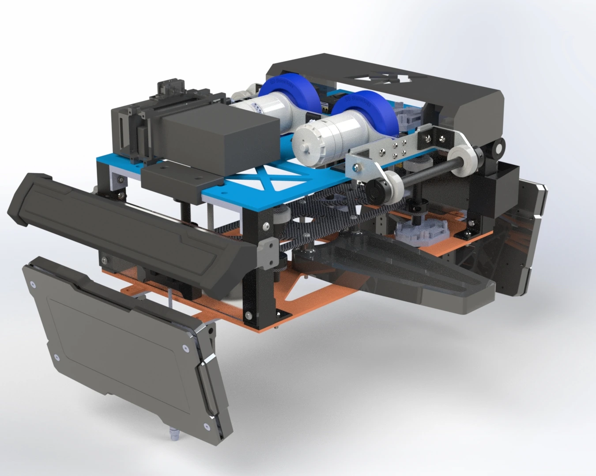
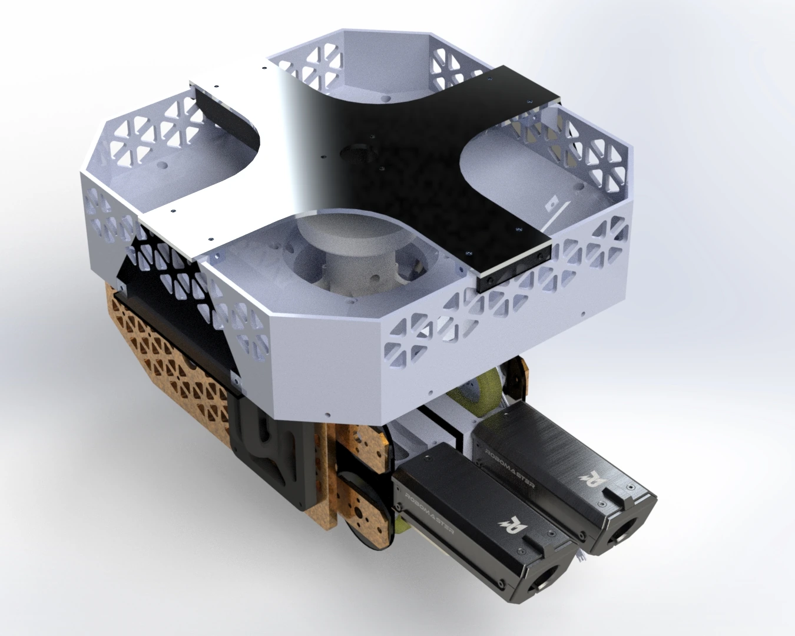

Mechanical design / Fabrication
RoboMaster Sentry
Make every mechanical interface work in the assembly.
Panel-to-turret interfaces, manufacturing constraints and assembly fit in a competition robot.
- Context
- UC San Diego · RoboMaster
- Period
- Undergraduate experience
- My contribution
- Sentry mechanical work · panel and turret interfaces
Evaluation at a glance
Panel-to-turret interface revisions and assembly-fit adjustments addressed integration of fabricated parts in the Sentry mechanism.
Introduction
Turn component geometry into a functional assembly.
Student competition robots provide a practical setting for developing fabrication and system-integration skills. The Sentry’s dense assembly required mechanical parts that fit their neighbors while accommodating motors, electronics and cooling.
Zongyu was responsible for Sentry mechanical work and updated the connection between a protective panel and the turret. This work focused on physical interfaces, assembly clearances and fabrication constraints.

Design & methods
Design around real materials and manufacturing.
The interface work combined component positioning, fastening and tolerance decisions. Metal and polymer parts, custom-fabricated components and selected printed parts introduced different manufacturing and assembly considerations.
The approach required considering the modified part within the robot: access for assembly, fit with adjacent hardware, and coordination with electronics, cooling and software-controlled mechanisms.


Evaluation
Evaluate the fit in context.
Physical assembly exposed differences between nominal CAD geometry and the fabricated parts. Clearance and fit adjustments were central to making components work together across fabrication methods.
The interface revision and assembly iteration developed practical experience with fit and integration. The club renderings place that work in the context of the surrounding Sentry system.
Conclusion
Design quality includes how a part gets assembled.
This experience developed practical judgment about tolerances, materials and manufacturing within a dense electromechanical system. It reinforced a principle carried into later research prototypes: design the interface and the assembly process together.
Explore the club's Sentry archive
Image credits & project sources
System, chassis and turret renderings: Triton Robotics Sentry archive. Renderings provide system context, not a drawing of the individual panel revision.